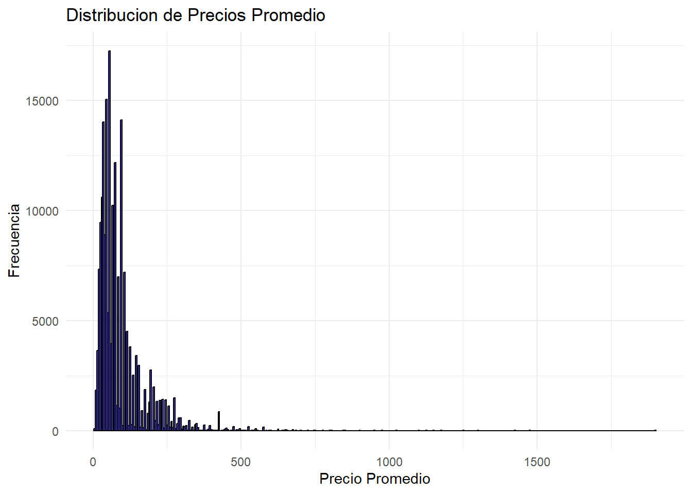
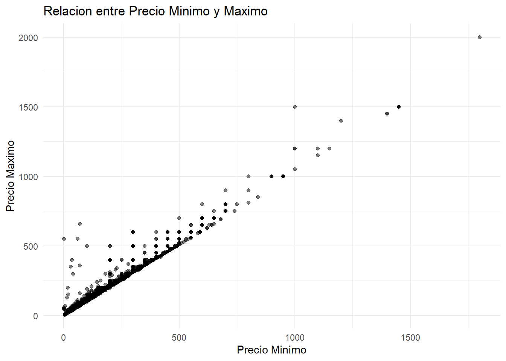
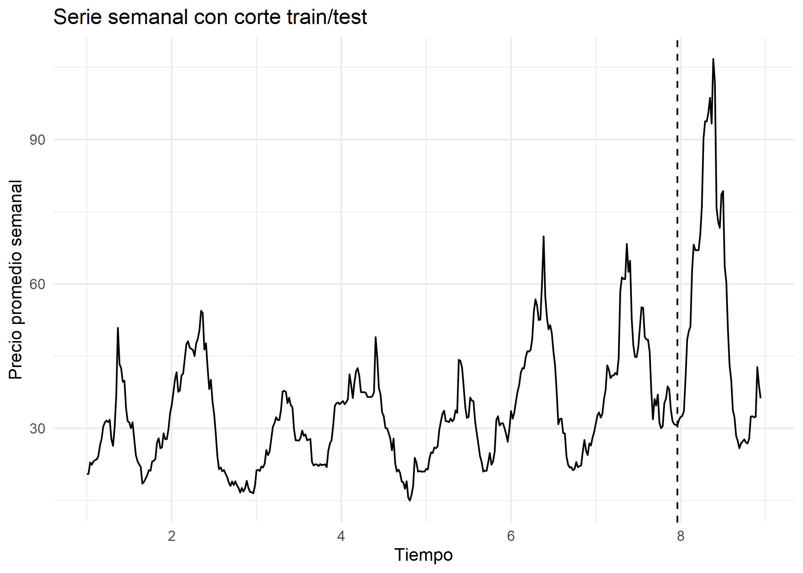
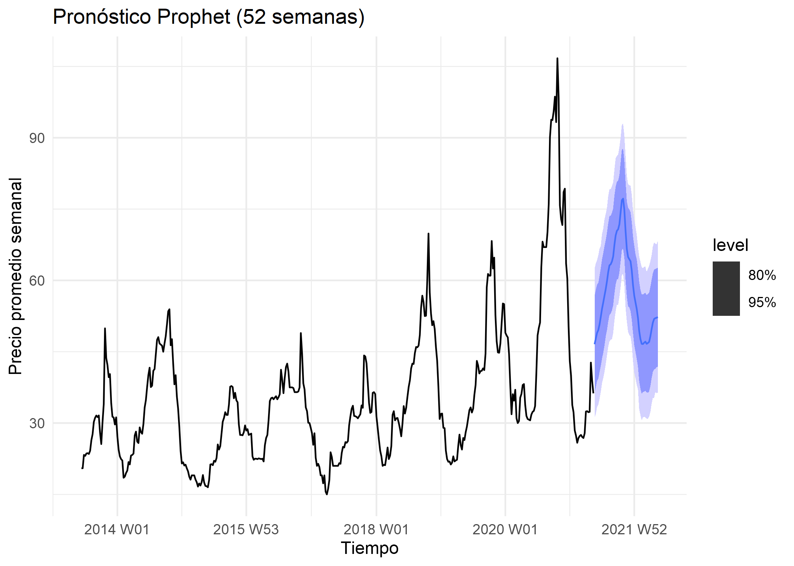
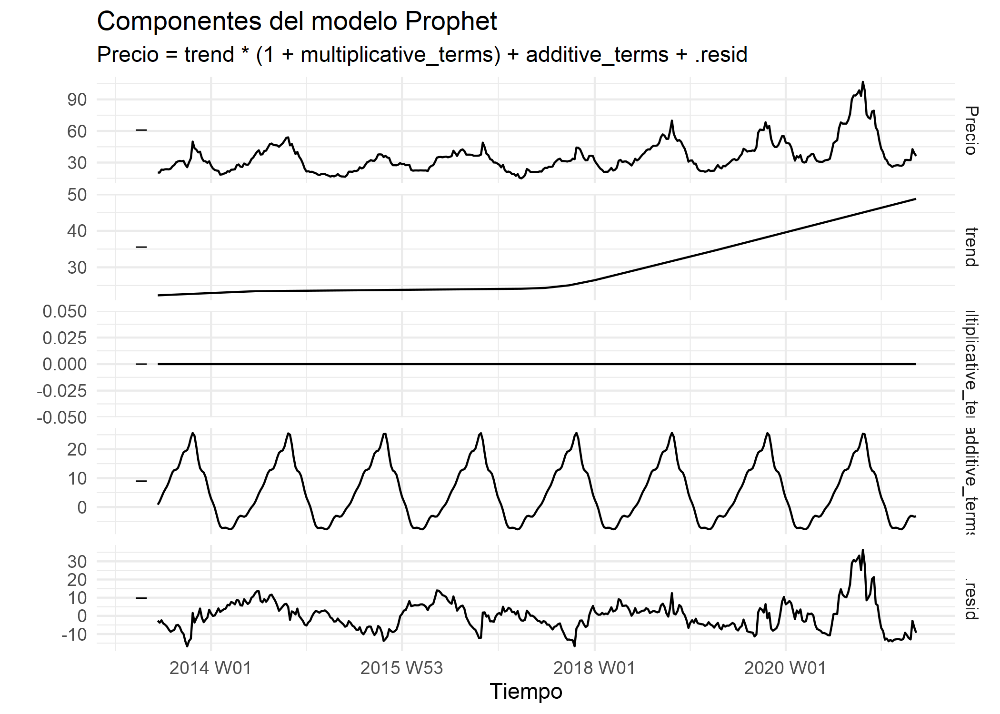

Capítulo 5 Prophet
## Loading required package: dplyr## Warning: package 'dplyr' was built under R version 4.3.3##
## Attaching package: 'dplyr'## The following objects are masked from 'package:stats':
##
## filter, lag## The following objects are masked from 'package:base':
##
## intersect, setdiff, setequal, union## Loading required package: tidyr## Warning: package 'tidyr' was built under R version 4.3.3## Loading required package: lubridate## Warning: package 'lubridate' was built under R version 4.3.3##
## Attaching package: 'lubridate'## The following objects are masked from 'package:base':
##
## date, intersect, setdiff, union## Loading required package: stringr## Warning: package 'stringr' was built under R version 4.3.3## Loading required package: tseries## Warning: package 'tseries' was built under R version 4.3.3## Registered S3 method overwritten by 'quantmod':
## method from
## as.zoo.data.frame zoo## # A tibble: 6 × 6
## Commodity Date Unit Minimum Maximum Average
## <chr> <date> <chr> <dbl> <dbl> <dbl>
## 1 Tomato Big(Nepali) 2013-06-16 <NA> 35 40 37.5
## 2 Tomato Small(Local) 2013-06-16 <NA> 26 32 29
## 3 Potato Red 2013-06-16 <NA> 20 21 20.5
## 4 Potato White 2013-06-16 <NA> 15 16 15.5
## 5 Onion Dry (Indian) 2013-06-16 <NA> 28 30 29
## 6 Carrot(Local) 2013-06-16 <NA> 30 35 32.5## tibble [197,161 × 6] (S3: tbl_df/tbl/data.frame)
## $ Commodity: chr [1:197161] "Tomato Big(Nepali)" "Tomato Small(Local)" "Potato Red" "Potato White" ...
## $ Date : Date[1:197161], format: "2013-06-16" "2013-06-16" ...
## $ Unit : chr [1:197161] NA NA NA NA ...
## $ Minimum : num [1:197161] 35 26 20 15 28 30 6 30 35 25 ...
## $ Maximum : num [1:197161] 40 32 21 16 30 35 10 35 40 30 ...
## $ Average : num [1:197161] 37.5 29 20.5 15.5 29 32.5 8 32.5 37.5 27.5 ...## Commodity Date Unit Minimum
## Length:197161 Min. :2013-06-16 Length:197161 Min. : 1.00
## Class :character 1st Qu.:2015-08-24 Class :character 1st Qu.: 40.00
## Mode :character Median :2017-08-03 Mode :character Median : 60.00
## Mean :2017-08-09 Mean : 85.42
## 3rd Qu.:2019-08-27 3rd Qu.: 100.00
## Max. :2021-05-13 Max. :1800.00
## Maximum Average
## Min. : 6.00 Min. : 5.00
## 1st Qu.: 45.00 1st Qu.: 42.50
## Median : 70.00 Median : 65.00
## Mean : 94.16 Mean : 89.79
## 3rd Qu.: 110.00 3rd Qu.: 105.00
## Max. :2000.00 Max. :1900.00## [1] 197161## [1] 0## Loading required package: ggplot2
## # A tibble: 1 × 5
## Mean Median SD Min Max
## <dbl> <dbl> <dbl> <dbl> <dbl>
## 1 89.8 65 79.6 5 1900
## [1] 0.9950614## [1] "Potato Red"## Warning: package 'forecast' was built under R version 4.3.3

## Loading required package: slider## Warning: package 'slider' was built under R version 4.3.3## ⚠️ La imagen 'stl2.png' aún no existe...# Crear carpeta de figuras si no existe
if (!dir.exists("figuras")) dir.create("figuras", recursive = TRUE)
# Definir ruta de salida del gráfico
outfile <- file.path("figuras", "serie_basica.png")
# Generar y guardar el gráfico
if (capabilities("cairo")) {
png(outfile, width = 1400, height = 600, res = 150, type = "cairo")
} else {
png(outfile, width = 1400, height = 600, res = 150)
}
op <- par(mar = c(4, 4, 3, 1), mgp = c(2.2, 0.8, 0))
plot(
potatored$Date, potatored$Average, type = "l",
col = "#1F77B4", lwd = 1.2,
xlab = "Fecha", ylab = "Precio promedio",
main = "Serie de tiempo: precio promedio"
)
par(op)
dev.off()## png
## 2# Asegurar que la carpeta 'figuras' exista (relativa al proyecto)
if (!dir.exists("figuras")) dir.create("figuras", recursive = TRUE)
# Definir la ruta de salida estándar
outfile <- file.path("figuras", "stl.png")
# --- Lógica de cálculo STL (existente) ---
y <- ts(potatored$Average, frequency = 365)
# interp lineal base (necesaria para STL si hay NAs)
y <- approx(seq_along(y), y, xout=seq_along(y))$y
fit <- stl(ts(y, frequency=365), s.window="periodic", robust=TRUE)
# --- Fin lógica de cálculo ---
# Generar y guardar el gráfico
if (capabilities("cairo")) {
png(outfile, width=1400, height=900, res=150, type="cairo")
} else {
png(outfile, width=1400, height=900, res=150)
}
op <- par(mfrow=c(4,1), mar=c(3,4,2,1))
plot(fit$time.series[,"remainder"], type="l", col="#7D3C98", main="Residuo", xlab="", ylab="")
plot(fit$time.series[,"seasonal"], type="l", col="#117A65", main="Estacionalidad", xlab="", ylab="")
plot(fit$time.series[,"trend"], type="l", col="#E67E22", main="Tendencia", xlab="", ylab="")
plot(y, type="l", col="#1F77B4", main="Serie (interpolada)", xlab="Tiempo", ylab="")
par(op); dev.off()## png
## 2# Incluir la imagen guardada en el bookdown
# Esta línea reemplaza el 'cat(sprintf(...))'
knitr::include_graphics(outfile)## png
## 2
## `geom_smooth()` using formula = 'y ~ x'## Warning: Removed 251 rows containing non-finite outside the scale range
## (`stat_smooth()`).## Warning: Removed 251 rows containing missing values or values outside the scale range
## (`geom_point()`).
## `geom_smooth()` using formula = 'y ~ x'## Warning: Removed 234 rows containing non-finite outside the scale range
## (`stat_smooth()`).## Warning: Removed 234 rows containing missing values or values outside the scale range
## (`geom_point()`).


## Warning: Using `size` aesthetic for lines was deprecated in ggplot2 3.4.0.
## ℹ Please use `linewidth` instead.
## ℹ The deprecated feature was likely used in the forecast package.
## Please report the issue at <https://github.com/robjhyndman/forecast/issues>.
## This warning is displayed once every 8 hours.
## Call `lifecycle::last_lifecycle_warnings()` to see where this warning was
## generated.
##
## Augmented Dickey-Fuller Test
##
## data: pot_ts_clean
## Dickey-Fuller = -3.0587, Lag order = 14, p-value = 0.1301
## alternative hypothesis: stationary## [1] 0## [1] TRUE## [1] 15.0 113.5## [1] 2.708050 4.731803## [1] 0.1322035## Warning in tseries::adf.test(na.omit(y_diff1)): p-value smaller than printed
## p-value## [1] 0.01## [1] 2889## [1] 365
## Warning: package 'zoo' was built under R version 4.3.3##
## Attaching package: 'zoo'## The following objects are masked from 'package:base':
##
## as.Date, as.Date.numeric
## $pars
## $pars$SES
## alpha l
## 0.9998999 20.0661412
##
## $pars$Holt
## alpha beta phi l b
## 0.9998998 0.1131366 0.8000015 19.3507661 0.7318030
##
## $pars$HW_adi
## a b s1 s2 s3 s4
## 39.08244375 0.07882721 -7.65617219 -5.33129937 -2.12172776 -0.60521373
## s5 s6 s7 s8 s9 s10
## 1.67227131 3.70855086 3.86297747 4.29730738 4.70950257 5.51286110
## s11 s12 s13 s14 s15 s16
## 6.58108183 9.34052131 11.67282675 11.56985459 10.72690049 10.62915737
## s17 s18 s19 s20 s21 s22
## 11.56624926 14.32396189 12.96493891 12.91210622 15.60833595 19.70484488
## s23 s24 s25 s26 s27 s28
## 18.21542017 15.04288451 8.57289145 4.41893044 3.59468994 2.26948285
## s29 s30 s31 s32 s33 s34
## 1.41348224 1.16589200 0.07345107 -2.59161738 -5.38569070 -6.81747767
## s35 s36 s37 s38 s39 s40
## -8.35116126 -10.31002086 -14.36805886 -15.48013931 -13.59119371 -14.10375330
## s41 s42 s43 s44 s45 s46
## -12.98609882 -13.91879059 -12.80762063 -12.45344901 -10.91079687 -9.50278976
## s47 s48 s49 s50 s51 s52
## -7.48181474 -7.63951511 -9.66359895 -9.41494901 -8.19836375 -8.36815804
##
## $pars$HW_multi
## a b s1 s2 s3 s4
## 40.06957603 0.07882721 0.78984647 0.86149189 0.95592829 0.99520880
## s5 s6 s7 s8 s9 s10
## 1.06150922 1.11859277 1.10742123 1.11547832 1.13362719 1.15295252
## s11 s12 s13 s14 s15 s16
## 1.19755872 1.28051297 1.34512974 1.33136792 1.29845693 1.29564795
## s17 s18 s19 s20 s21 s22
## 1.31337013 1.37966490 1.36129664 1.37542631 1.45910223 1.55273805
## s23 s24 s25 s26 s27 s28
## 1.49801968 1.41880910 1.25803359 1.12986066 1.10809063 1.06878253
## s29 s30 s31 s32 s33 s34
## 1.05012792 1.03448499 1.00251606 0.92562241 0.84794487 0.78549769
## s35 s36 s37 s38 s39 s40
## 0.73966473 0.68969443 0.59218461 0.55743071 0.58537805 0.58407654
## s41 s42 s43 s44 s45 s46
## 0.61227139 0.60444293 0.63415394 0.64018299 0.67488001 0.72564177
## s47 s48 s49 s50 s51 s52
## 0.78927007 0.78769837 0.73692250 0.74269354 0.77194581 0.76652385
##
##
## $metodos
## SES
## "ETS(A,N,N)"
## Holt
## "ETS(A,Ad,N)"
## HW_adi
## "Holt-Winters aditivo (HoltWinters)"
## HW_mul
## "Holt-Winters multiplicativo (HoltWinters)"## model RMSE MAE MAPE
## Training set...1 SES 2.929804 1.928708 5.748854
## Test set...2 SES 33.778723 24.276695 34.505452
## Training set...3 Holt 2.902352 1.901817 5.638535
## Test set...4 Holt 34.593228 24.973105 35.456690
## Training set...5 HW_adi 2.984060 2.102575 6.453931
## Test set...6 HW_adi 20.668712 14.555681 20.798164
## Training set...7 HW_mul 2.846973 1.996849 6.036061
## Test set...8 HW_mul 18.997168 13.487363 19.577035
##
## Ljung-Box test
##
## data: Residuals from HoltWinters
## Q* = 76.422, df = 62, p-value = 0.1029
##
## Model df: 0. Total lags used: 62
## Semana Pronostico LI_80 LS_80 LI_95 LS_95
## 1 8.961538 37.69 33.31 42.07 30.99 44.39
## 2 8.980769 40.88 35.05 46.72 31.96 49.81
## 3 9.000000 45.08 37.83 52.33 33.99 56.16
## 4 9.019231 47.46 39.09 55.83 34.66 60.26
## 5 9.038462 50.77 41.19 60.34 36.13 65.41
## 6 9.057692 55.25 44.31 66.19 38.52 71.98
## 7 9.076923 55.96 44.35 67.58 38.20 73.73
## 8 9.096154 55.31 43.30 67.32 36.95 73.67
## 9 9.115385 55.66 43.09 68.24 36.43 74.90
## 10 9.134615 58.37 44.76 71.99 37.55 79.20## total train test
## 414 362 52

## Series: y_train_w_log_sdiff
## ARIMA(1,0,0) with zero mean
##
## Coefficients:
## ar1
## 0.9562
## s.e. 0.0163
##
## sigma^2 = 0.009812: log likelihood = 276.14
## AIC=-548.29 AICc=-548.25 BIC=-540.82## Series: y_train_w_log
## ARIMA(1,0,0)(0,1,0)[52]
##
## Coefficients:
## ar1
## 0.9562
## s.e. 0.0163
##
## sigma^2 = 0.009814: log likelihood = 276.15
## AIC=-548.3 AICc=-548.26 BIC=-540.82## model RMSE MAE MAPE
## Training set SARIMA_52 0.09152501 0.06528711 1.90487
## Test set SARIMA_52 18.80827374 15.08098880 25.67046
##
## Ljung-Box test
##
## data: Residuals from ARIMA(1,0,0)(0,1,0)[52]
## Q* = 152.72, df = 71, p-value = 6.441e-08
##
## Model df: 1. Total lags used: 72
## Series: y
## ARIMA(1,1,0)
##
## Coefficients:
## ar1
## -0.2051
## s.e. 0.0190
##
## sigma^2 = 4.054: log likelihood = -5848.36
## AIC=11700.72 AICc=11700.73 BIC=11712.66## [1] 11700.72## [1] 11712.56## Point Forecast Lo 80 Hi 80 Lo 95 Hi 95
## 413.7143 36 33.41964 38.58036 32.05368 39.94632
## 413.8571 36 32.70369 39.29631 30.95873 41.04127
## 414.0000 36 32.05918 39.94082 29.97304 42.02696
## 414.1429 36 31.51683 40.48317 29.14359 42.85641
## 414.2857 36 31.03139 40.96861 28.40117 43.59883
## 414.4286 36 30.58970 41.41030 27.72566 44.27434
## 414.5714 36 30.18137 41.81863 27.10118 44.89882
## 414.7143 36 29.79989 42.20011 26.51775 45.48225
## 414.8571 36 29.44055 42.55945 25.96819 46.03181
## 415.0000 36 29.09991 42.90009 25.44722 46.55278
## 415.1429 36 28.77530 43.22470 24.95078 47.04922
## 415.2857 36 28.46467 43.53533 24.47571 47.52429
## 415.4286 36 28.16635 43.83365 24.01946 47.98054
## 415.5714 36 27.87897 44.12103 23.57996 48.42004
## 415.7143 36 27.60143 44.39857 23.15549 48.84451
## 415.8571 36 27.33276 44.66724 22.74461 49.25539
## 416.0000 36 27.07218 44.92782 22.34608 49.65392
## 416.1429 36 26.81899 45.18101 21.95886 50.04114
## 416.2857 36 26.57260 45.42740 21.58204 50.41796
## 416.4286 36 26.33249 45.66751 21.21482 50.78518
## 416.5714 36 26.09819 45.90181 20.85650 51.14350
## 416.7143 36 25.86932 46.13068 20.50646 51.49354
## 416.8571 36 25.64550 46.35450 20.16416 51.83584
## 417.0000 36 25.42642 46.57358 19.82910 52.17090
## 417.1429 36 25.21179 46.78821 19.50085 52.49915
## 417.2857 36 25.00134 46.99866 19.17900 52.82100
## 417.4286 36 24.79485 47.20515 18.86320 53.13680
## 417.5714 36 24.59209 47.40791 18.55311 53.44689
## 417.7143 36 24.39287 47.60713 18.24843 53.75157
## 417.8571 36 24.19702 47.80298 17.94890 54.05110Se cargan las librerías fpp3 y fable.prophet. Luego, se preparan los datos agregando la serie diaria a un formato tsibble semanal
## Registered S3 method overwritten by 'tsibble':
## method from
## as_tibble.grouped_df dplyr## ── Attaching packages ──────────────────────────────────────────── fpp3 1.0.2 ──## ✔ tibble 3.2.1 ✔ feasts 0.4.2
## ✔ tsibble 1.1.6 ✔ fable 0.4.1
## ✔ tsibbledata 0.4.1## Warning: package 'tibble' was built under R version 4.3.3## Warning: package 'tsibble' was built under R version 4.3.3## Warning: package 'tsibbledata' was built under R version 4.3.3## Warning: package 'fable' was built under R version 4.3.3## ── Conflicts ───────────────────────────────────────────────── fpp3_conflicts ──
## ✖ lubridate::date() masks base::date()
## ✖ dplyr::filter() masks stats::filter()
## ✖ tsibble::index() masks zoo::index()
## ✖ tsibble::intersect() masks base::intersect()
## ✖ tsibble::interval() masks lubridate::interval()
## ✖ dplyr::lag() masks stats::lag()
## ✖ tsibble::setdiff() masks base::setdiff()
## ✖ tsibble::union() masks base::union()## Warning: package 'fable.prophet' was built under R version 4.3.3## Loading required package: Rcpp## Warning: package 'Rcpp' was built under R version 4.3.3pot_weekly_tsbl <- potatored %>%
mutate(Week = yearweek(Date)) %>%
group_by(Week) %>%
summarise(
Precio = mean(Average, na.rm = TRUE),
.groups = "drop"
) %>%
as_tsibble(index = Week)
# Vista rapida de la serie semanal
pot_weekly_tsbl## # A tsibble: 414 x 2 [1W]
## Week Precio
## <week> <dbl>
## 1 2013 W24 20.5
## 2 2013 W25 20.5
## 3 2013 W26 23.3
## 4 2013 W27 23.1
## 5 2013 W28 23.6
## 6 2013 W29 23.7
## 7 2013 W30 23.5
## 8 2013 W31 24.2
## 9 2013 W32 26.4
## 10 2013 W33 27.7
## # ℹ 404 more rows5.1 Ajustamos el modelo Prophet
Definimos explícitamente una estacionalidad anual (season(“year”)) y semanal (season(“week”)) mediante series de Fourier (con órdenes 10 y 3, respectivamente) para capturar los patrones cíclicos.
fit_prophet <- pot_weekly_tsbl %>%
model(
prophet = prophet(
Precio ~ season("year", order = 10) + #anual
season("week", order = 3) #semanal
)
)
fit_prophet## # A mable: 1 x 1
## prophet
## <model>
## 1 <prophet>5.2 Generación del modelo Prophet
Generamos un pronóstico a 52 semanas (un año) usando el modelo Prophet ajustado. Procedemos a graficar este pronóstico (fc_prophet) junto a la serie original (pot_weekly_tsbl) para evaluar visualmente el ajuste.
h_future <- 52 # un año
#pronóstico
fc_prophet <- fit_prophet %>%
forecast(h = h_future)
#gráfico del pronóstico
autoplot(fc_prophet, pot_weekly_tsbl) +
labs(title = "Pronóstico Prophet (52 semanas)",
y = "Precio promedio semanal",
x = "Tiempo") +
theme_minimal()
## # A fable: 10 x 4 [1W]
## # Key: .model [1]
## .model Week Precio .mean
## <chr> <week> <dist> <dbl>
## 1 prophet 2021 W20 sample[5000] 46.6
## 2 prophet 2021 W21 sample[5000] 47.8
## 3 prophet 2021 W22 sample[5000] 49.0
## 4 prophet 2021 W23 sample[5000] 49.6
## 5 prophet 2021 W24 sample[5000] 50.7
## 6 prophet 2021 W25 sample[5000] 52.3
## 7 prophet 2021 W26 sample[5000] 54.0
## 8 prophet 2021 W27 sample[5000] 55.4
## 9 prophet 2021 W28 sample[5000] 56.8
## 10 prophet 2021 W29 sample[5000] 58.25.3 Extracción de componentes del modelo
Extraemos y visualizamos los componentes internos que el modelo Prophet ha estimado: la tendencia (trend), la estacionalidad anual (season_year) y la estacionalidad semanal (season_week).
components_prophet <- components(fit_prophet)
autoplot(components_prophet) +
labs(title = "Componentes del modelo Prophet",
x = "Tiempo", y = "") +
theme_minimal()
5.4 Comparación de métricas
Extraemos el pronóstico de Prophet, lo convertimos a un objeto ts (compatible con forecast::accuracy) y calculamos el RMSE, MAE y MAPE contra el set de prueba (y_test_w). Finalmente, lo comparamos con las métricas ya calculadas de Holt-Winters (HW) y SARIMA.
fc_prophet_mean <- fc_prophet %>%
as_tibble() %>%
pull(.mean)
length(fc_prophet_mean); length(y_test_w)## [1] 52## [1] 52fc_prophet_mean_ts <- ts(
fc_prophet_mean,
start = start(y_test_w),
frequency = frequency(y_test_w)
)
acc_prophet <- forecast::accuracy(fc_prophet_mean_ts, y_test_w)
acc_hw <- forecast::accuracy(fc_hwm_w, y_test_w)
acc_arima <- forecast::accuracy(fc_seas, y_test_w)
acc_prophet## ME RMSE MAE MPE MAPE ACF1 Theil's U
## Test set -3.95777 16.33774 14.53309 -23.10411 35.06264 0.9235695 3.973996## ME RMSE MAE MPE MAPE MASE
## Training set 0.002067938 2.846973 1.996849 -0.5664407 6.036061 0.2282876
## Test set 11.967660543 18.997168 13.487363 14.9635500 19.577035 1.5419278
## ACF1 Theil's U
## Training set 0.1709493 NA
## Test set 0.9102806 2.309535## ME RMSE MAE MPE MAPE MASE
## Training set 0.00243205 0.09152501 0.06528711 0.03373683 1.90487 0.2339729
## Test set 9.04150112 18.80827374 15.08098880 6.33254734 25.67046 54.0465406
## ACF1 Theil's U
## Training set 0.003903853 NA
## Test set 0.913122336 2.719755row_p <- nrow(acc_prophet)
row_hw <- nrow(acc_hw)
row_ar <- nrow(acc_arima)
acc_compare <- data.frame(
model = c("Prophet", "HW_multiplicativo", "SARIMA_52"),
RMSE = c(acc_prophet[row_p, "RMSE"],
acc_hw[row_hw, "RMSE"],
acc_arima[row_ar, "RMSE"]),
MAE = c(acc_prophet[row_p, "MAE"],
acc_hw[row_hw, "MAE"],
acc_arima[row_ar, "MAE"]),
MAPE = c(acc_prophet[row_p, "MAPE"],
acc_hw[row_hw, "MAPE"],
acc_arima[row_ar, "MAPE"])
)
acc_compare## model RMSE MAE MAPE
## 1 Prophet 16.33774 14.53309 35.06264
## 2 HW_multiplicativo 18.99717 13.48736 19.57704
## 3 SARIMA_52 18.80827 15.08099 25.67046Comparación de desempeño entre Prophet, Holt–Winters y SARIMA
A partir de la ventana de prueba de 52 semanas, se evaluó la capacidad predictiva de los tres modelos (Prophet, Holt-Winters multiplicativo y SARIMA(1,0,0)(0,1,0)[52]) utilizando las métricas RMSE, MAE y MAPE.
Los resultados muestran diferencias claras en el desempeño:
Holt-Winters Multiplicativo (Ganador): Obtuvo el MAPE más bajo (19.58%) y el menor MAE (13.49). Esto indica que es el modelo con menor error porcentual fuera de muestra y la mejor estabilidad en la magnitud absoluta de sus errores.
Prophet: Logró el RMSE más bajo (16.27), sugiriendo que, en promedio, la desviación de sus pronósticos fue menor. Sin embargo, presentó el MAPE más alto (34.91%), indicando errores proporcionalmente mayores en ciertos puntos, posiblemente por un sobreajuste o suavizado excesivo de las oscilaciones semanales del precio.
SARIMA(1,0,0)(0,1,0)[52]: Mostró un RMSE similar a Holt-Winters (18.81), aunque su error porcentual (MAPE = 25.67%) fue superior. Esto sugiere que su captura de la estacionalidad (vía diferencia estacional) no fue tan precisa como el patrón multiplicativo de Holt-Winters.
5.5 Conclusión de la comparación:
El mejor equilibrio entre precisión (RMSE) y estabilidad (MAPE/MAE) fue logrado por el modelo Holt-Winters multiplicativo. No obstante, Prophet demostró ser competitivo en RMSE, y SARIMA se mantuvo como una alternativa sólida intermedia.
5.6 Pruebas de estacionariedad Dickey Fuller
Evaluamos la serie en tres estados: en niveles (original), con transformación logarítmica y con una primera diferencia sobre el logaritmo.
## Warning in adf.test(y0): p-value smaller than printed p-value## [1] 0.01## Warning in adf.test(y_log): p-value smaller than printed p-value## [1] 0.01#Diferencia de primer orden
y_diff <- diff(y_log, differences = 1)
adf_diff <- adf.test(na.omit(y_diff))## Warning in adf.test(na.omit(y_diff)): p-value smaller than printed p-value## [1] 0.01data.frame(
Serie = c("Nivel", "Log", "Log diferencia 1"),
p_value = c(adf_nivel$p.value, adf_log$p.value, adf_diff$p.value)
)## Serie p_value
## 1 Nivel 0.01
## 2 Log 0.01
## 3 Log diferencia 1 0.01Justificación del uso de la serie como regresión
De acuerdo con la teoría, una regresión en series de tiempo requiere que las variables sean estacionarias para evitar regresiones espurias, donde se encuentran relaciones estadísticas que no existen en la realidad. Por ello, se evaluó la estacionariedad del precio semanal del Potato Red (la serie y_w).
Resultados de la Prueba ADF (Augmented Dickey-Fuller)
Serie en Niveles: p-valor = 0.01
Serie en Logaritmo: p-valor = 0.01
Serie en Log-Diferencia (d=1): p-valor = 0.01
Conclusión de Estacionariedad En los tres casos, el p-valor (0.01) es significativamente menor al nivel de significancia del 5% (0.05), lo que permite rechazar la hipótesis nula (H0) de raíz unitaria.
Esto confirma que la serie semanal es estacionaria (o al menos estacionaria en tendencia) en sus diferentes transformaciones. Este cumplimiento de la condición de estacionariedad valida el uso de enfoques de regresión para modelar la serie.
Tanto SARIMA (que puede verse como una regresión con errores ARMA) como Prophet (que se formula como un modelo de regresión no lineal aditivo) son, por lo tanto, enfoques teóricamente viables para esta serie de tiempo.